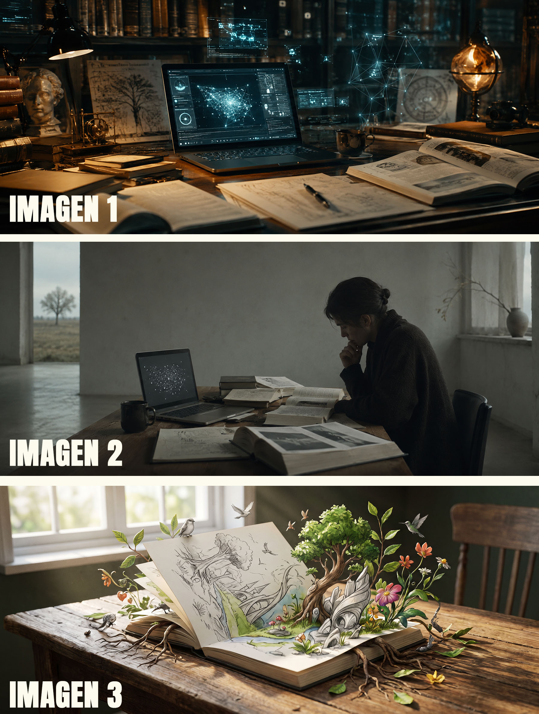

La imaginación al poder: IA generativa y procesos creativos para la enseñanza universitaria — Docente: Diego Cagide
Clase 5
Recursos didácticos interactivos para el aula
Bienvenida
Objetivos de la clase
Bloque A — La IA en el mundo de la interactividad
💡 Ejemplos de esta clase
¿Qué recursos didácticos podemos crear?
🌌 Simulación explicativa: Sistema solar interactivo
Modelo: Claude (Sonnet 5)
🔢 Módulo de autoevaluación: Traductor matemático
Modelo: Claude (Sonnet 5)
🎵 Prototipo de sintetizador: Música 3D
Modelo: Claude (Sonnet 5)
Bloque B — Crear dispositivos: estructura y metodología
Tipos de recurso
Ejercitaciones autoevaluables
Juegos educativos
Líneas de tiempo interactivas
Simulaciones
Módulos explicativos
Elementos, diseño y comportamientos interactivos
Materiales adjuntos
Retroalimentación inmediata
Parámetros ajustables
Arrastrar y soltar
Puntaje y reinicio
Sonido
Exploración y zoom
Hotspots
Diseño
Gramática del prompt
Ejemplos simples
🧠 Tarjetas de memoria
Prompt
⏳ Línea de tiempo
Prompt
Ejemplos (un poco más) complejos
🔥🧪 Laboratorio de química
Prompt
📷 La luz y la cámara
Prompt
Bloque C — Otros recursos e incorporación al aula
🔢 Ordenar una secuencia
Modelo: Claude (Sonnet 5)
Dispositivo de tipo "ordenar pasos": tarjetas arrastrables (con botones de subir/bajar como alternativa) que arman la secuencia correcta de un procedimiento, con verificación al tocar un botón y reinicio con un nuevo orden al azar.
🔭 Exploración guiada
Modelo: Claude (Sonnet 5)
Simulación de átomo: se elige un elemento de una tira de la tabla periódica y se muestra el núcleo con sus electrones girando en capas, junto con sus datos (número atómico, masa, configuración electrónica) y un dato curioso de cada uno.
🎯 Aproximación
Modelo: Claude (Sonnet 5)
Dispositivo de tipo "estimar y comparar": se ajustan sliders para repartir el 100% entre distintos grupos y, al confirmar, se revelan los valores reales junto con el grupo donde más se alejó la estimación.
🗂️ Emparejar y clasificar
Modelo: Claude (Sonnet 5)
Dispositivo de tipo "emparejar/clasificar": una lista de elementos (herramientas de IA) que hay que asignar, tocando o arrastrando, a la categoría correcta entre dos o más posibles, con marca de correcto/incorrecto al momento.
📍 Diagrama con hotspots
Modelo: Claude (Sonnet 5)
Dispositivo de tipo "diagrama con hotspots": un texto (en este caso, un prompt de ejemplo) con partes resaltadas en distintos colores según su función; al tocar una parte, o su categoría en la referencia, se despliega la explicación correspondiente.
Incorporación de un recurso en el aula
Bloque D — Formato web y aula virtual
Ejemplo: de un PDF a una web
Antes de arrancar: los insumos
FOTOS

Recomendación práctica
Prompt